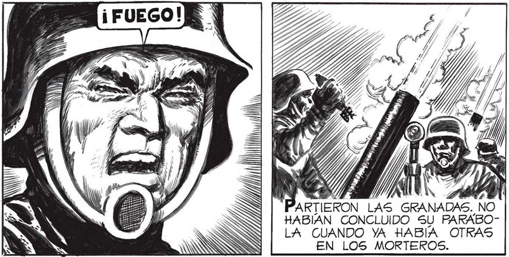

PERO YA CONCLUÍAN LOS PREPARATIVOS. BIEN... A LA ORDEN DE FUEGO DISPARARAN LOS MORTEROS: EL ESTALLIDO DE SUS GRANADAS SERA LA SEÑAL PARA TODOS LOS DEMAS,¿ENTENDIDO 2 Huso UN MOVIMIENTO NERVIOSO EN TODOS: LOS HOMBRES SE DABAN... NS Y T LAS GRANADAS. NO HABIAN CONCLUIDO SU PARABOLA CUANDO YA HABIA OTRAS EN LOS MORTEROS. LA MIRADA CALMA, PROFESIONALMENTE CALMA DEL MAYOR PASO REVISTA A LOS MORTEROS... | TUNDENTE, LO O 4 da a » UNI, ¿2% | ta Ao A PAJA A LOS SOLDADOS ENCARGADOS DE LAS BAZOOKAS; A LOS HOMBRES QUE SOLO AGUARDABAN... .UNA SEÑAL PARA ABRIR EL FUEGO. | ... A LA MORTAL EFICACIA DEL KAYO. .. CABAL CUENTA EL FUEGO DE LAS BAZOOKAS DE LA VITAL 1M- SE CONCENTRARÁ SOBRE EL | PORTANCIA DE REFLECTOR. LOGS DEMAS CAS QUE EL ATAQUE TIGARAN AL PERSONAL. INICIAL. FUERA 7 $. LO MAS CON- 5% MAS DESTRUCTIVO POSIBLE. Sl DEJABAMOS QUE EL INVASOR CONTRAATACASE NUESTRA DERRO- |. TA ERA SEGURA: |: NADA PODRÍA Hiliico... MA PUN 1 | BRES HICIERON LOS ÚLTIMOS AJUSOPONERSE ... PEN da: TES. DE LA EXACTITUD DE LA PRIME¿GAN AN | RA DESCARGA DEPENDIA TODO. ys : > ES Pe $ — "2 RBUNA SERIE DE === 77 NEAS ARRASO LA ROTONDA ... 93
